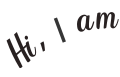

I design and code experiences with curiosity and an unhealthy amount of attention to tiny details.
Beyond frontend and UI, I’m exploring the world of ML/DL — probably with a cup of coffee nearby and too many tabs open.


With a diverse set of technical skills,
here’s a glimpse of what
I bring to the table.